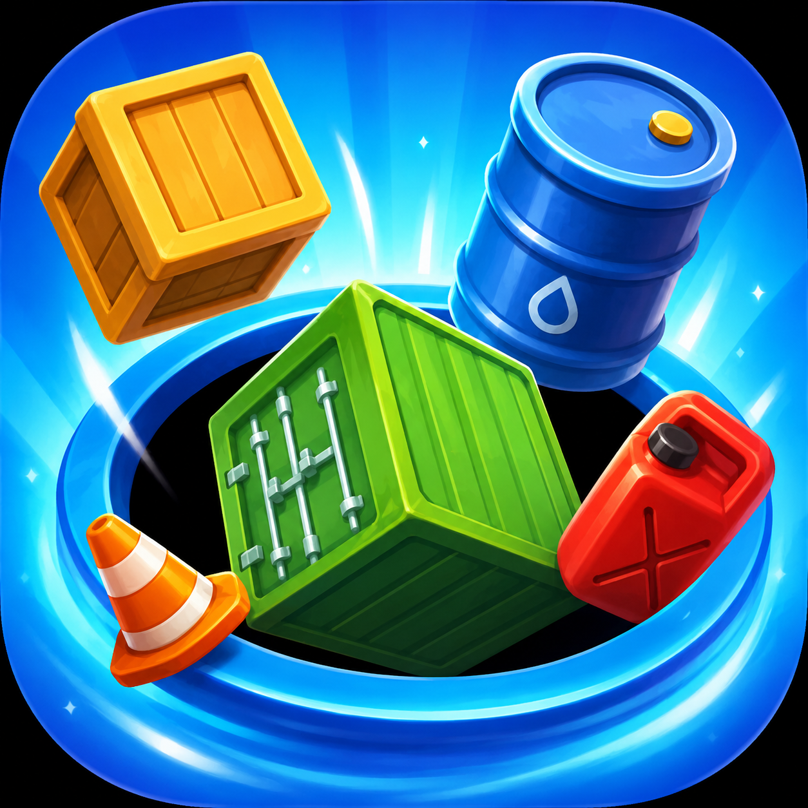

Hello! I'm a passionate Game Designer focused on creating engaging and meaningful player experiences. I enjoy working on gameplay systems, level design, and understanding player behavior to build intuitive and satisfying interactions. I constantly explore new ideas, analyze games, and refine my design thinking through hands-on projects.
My goal is to design games that are not only fun to play but also memorable and impactful.
📧 Email: lehonhattan2004@gmail.com 🔗 LinkedIn: Visit my LinkedIn
This project analyzes the early design of Desconstruct, focusing on how mechanics are introduced and expanded across the first 100 levels. It explores player learning, puzzle progression, and how minimalistic design can still create deep and engaging gameplay experiences.

Prism Color Flow is a 3D puzzle game where players rotate the board to discover visible tile groups and absorb matching colors through interactive color holes. The gameplay focuses on satisfying chain reactions, spatial observation, and strategic decision-making while managing limited storage capacity. Unlike traditional puzzle games, only visible surfaces can be interacted with, creating a unique rotation-based challenge that combines casual accessibility with deeper puzzle strategy.
Inspired by Toon Blast and Screwdom 3D, the concept combines color-matching, resource management, and 3D interaction into a scalable casual puzzle experience designed for long-term engagement.

Cargo Hole is a casual 3D collection puzzle game where players control a moving hole to swallow objects around the map and deliver them to randomized docks with specific requests. The gameplay focuses on satisfying collection flow, navigation, and inventory management while balancing limited storage capacity and time pressure. As players complete docks, the hole gains EXP, increases in size, and unlocks the ability to absorb larger objects, creating a rewarding sense of progression throughout each level.
Inspired by All In Hole and Hot Pot Sort, the concept combines object collection, delivery-based objectives, and scalable upgrade progression into an accessible casual gameplay experience with increasing strategic depth.

Garage Flow is a casual traffic puzzle game where players tap cars to navigate them through crowded road systems and deliver matching vehicles into color-specific garage docks. The gameplay focuses on traffic management, spatial planning, and route organization while using temporary holding docks to prevent deadlocks and free blocked paths. As garages are completed, they disappear and reveal new construction areas, continuously reshaping the puzzle layout and creating dynamic progression throughout each level.
Inspired by Crowd Express and Hot Pot Sort, the concept combines traffic-flow gameplay, color-matching objectives, and evolving board progression into a scalable casual puzzle experience built around strategic sequencing and satisfying level resolution.